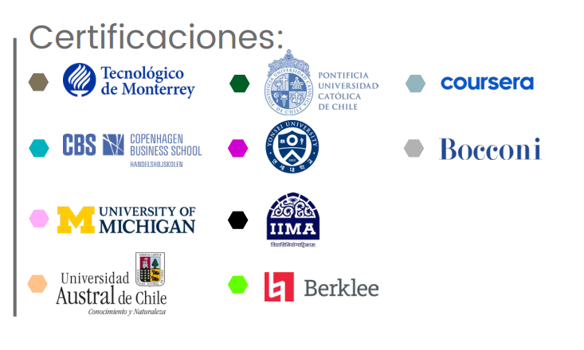

🍽️ Licenciatura Ejecutiva en Gastronomía
Aplica EQ | Categoría: Hospitalidad, Turismo y Gastronomía
📖 ¿De qué trata esta Licenciatura?
Forma profesionales capaces de diseñar, preparar y gestionar proyectos culinarios con visión empresarial y dominio de técnicas nacionales e internacionales. Aprenderás sobre cocina, repostería, coctelería, nutrición, costos, operación de restaurantes y tendencias globales.
📌 Detalles del Programa
- ⏳ Duración: 4 años (12 cuatrimestres).
- 🛡️ Modalidad: 100% en línea.
- Plataforma: Blackboard con acceso 24/7.
- Clases: 1 a 2 sesiones semanales opcionales (grabadas).
- Soporte: Asistencia Lince 24/7.
- Recursos: Biblioteca virtual, Office y simuladores gastronómicos.
🌟 Razones para Estudiar en UVM
- Certificaciones laborales: Materias con certificación internacional (Coursera) desde el 2° cuatrimestre.
- Doble Titulación: Con National Louis University (Bachelor of Science in Management).
- Enfoque práctico: Cocina mexicana, internacional, repostería, panadería, bebidas y gestión de restaurantes.
- Experiencia global: Oportunidades de viajes académicos y conferencias internacionales.
💼 Oportunidades Laborales
Podrás desempeñarte en:
- 📌 Restaurantes y hoteles: Como chef profesional o jefe de cocina en áreas de especialidad.
- 📌 Negocios de alimentos y bebidas: Dirección, control de calidad, compras o desarrollo de menús.
- 📌 Emprendimiento gastronómico: Creación de tu propio restaurante, food truck o línea de productos.
- 📌 Centros turísticos o gastronómicos: Planeación de experiencias culinarias y eventos especiales.
- 📌 Consultoría o educación: Asesoría en operaciones gastronómicas o como docente en el área.
🎓 Certificaciones Internacionales
🎯 Tips para Vender la Licenciatura
- 💡 "Ideal si te apasiona cocinar, crear experiencias culinarias y quieres emprender en el sector gastronómico."
- 🔍 "Aprenderás desde técnicas básicas y cocina internacional hasta administración de restaurantes y desarrollo de productos."
- 📌 "La industria gastronómica es una de las más dinámicas y con gran proyección emprendedora a nivel mundial."
🛑 Objeciones Comunes y Respuestas
- ❓ "¿Cómo se aprende cocina en línea?"
✅ "Con videos, simuladores, guías prácticas y asesoría docente puedes desarrollar habilidades paso a paso desde casa." - ❓ "¿Necesito tener experiencia previa en cocina?"
✅ "No. Comenzarás desde lo básico hasta niveles profesionales y gestión de alimentos." - ❓ "¿Dónde puedo trabajar al egresar?"
✅ "En restaurantes, hoteles, eventos, turismo gastronómico o iniciar tu propio negocio de alimentos."